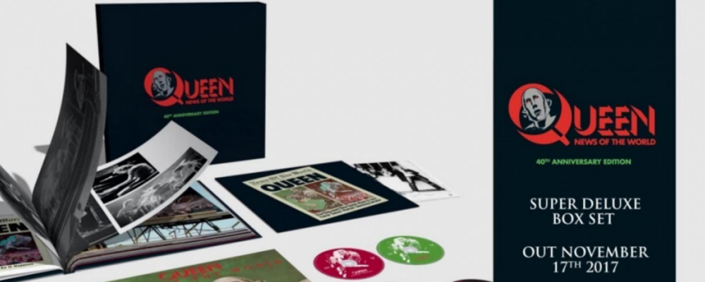

A special box set of Queen's landmark 1977 album News of the World is set for release towards the end of this year, marking the 40th anniversary of the original release. This lavish new package has a worldwide release date of November 17th. The box set is available to pre-order now at https://queen.lnk.to/NOTW40.
The 40th anniversary is also marked with the release of a special limited edition picture disc album. Newly cut from the Bob Ludwig 2011 master, this picture disc version will be available in a strictly limited run of 1977 individually numbered copies housed in a commemorative die-cut sleeve. This version will only be available through pre-order from the official Queenonline webstore. http://www.queenonlinestore.com
Originally launched in October 1977, News of the World is one of Queen's biggest selling albums of all time. It opens with two of the band's most indestructible worldwide hits, the Brian May-penned We Will Rock You and Freddie Mercury's We Are The Champions, monumental stadium anthems which remain a staple of major sporting events all around the world to this day. With songs written by all four band members, NOTW, Queen's sixth album, set a new standard in stylistic diversity, from Roger Taylor’s proto-punk blast of Sheer Heart Attack to the salacious funk-rock groove workout Get Down Make Love, to the fragrant tropical calypso-pop Who Needs You. News of the World also features the hit Spread Your Wings, the epic rock saga It’s Late and Freddie’s wistfully romantic My Melancholy Blues.
The new package includes the original album on CD, plus two further CDs of recently unearthed out-takes and rarities from the band's archives, one of which is a newly created ‘alternative’ version of the whole album – Raw Sessions.
For many Queen devotees, this Raw Sessions CD will be the most intriguing component of the new release. Mined deep from long-vaulted studio multi-track tapes, this extraordinary parallel album brings to light never-before-heard alternative versions of each of the album’s 11 tracks. Every lead vocal is different, as are most of the lead guitar parts and a great many other instrumental details. Here we experience We Are The Champions anew, with many unfamiliar vocal and instrumental elements, and for the first time at its full-recorded length rather than the edited 1977 album cut. Here also is the chance to discover peak era Freddie Mercury vocals on a track that nobody outside Queen’s inner circle has heard him sing before at all – Brian May’s All Dead, All Dead. The original album version features May himself on vocals. Roger Taylor’s Sheer Heart Attack can be heard with its original long-lost guitar intro and uncut ending. Taylor’s other song, Fight From The Inside, is more remarkable in that we hear his demo vocal worked on in his home studio in preparation for the next sessions, ‘homework’ that all of the band members would regularly carry out. As a point of note, Taylor plays all instruments on these two recordings, except for some lead guitar. In this age of digital leaks and obsessive fan culture, there is already great excitement that these recordings are, in 2017, truly New to the World.
The third CD in the package, Bonus Tracks, features a feast of previously released but hard-to-find versions of News of the World tracks recorded in concert, for radio shows, or in alternate mixes. Included is the band's entire five-song final live session recorded for BBC Radio in October 1977, seven live performances of NOTW songs, plus rare backing tracks and instrumentals of the Queen classics We Will Rock You, We Are The Champions, Spread Your Wings, Get Down, Make Love and Fight From The Inside. Also on this third disc is the seldom-heard US radio edit of It's Late, making its belated CD debut, and the rowdy stomper Feelings Feelings, which was recorded during the original NOTW sessions but not included on the final album.
The package is completed with a brand new one-hour DVD documentary, Queen : The American Dream, created from backstage material filmed during Queen’s 1977 USA News of the World tour. In November that year, Queen embarked on another headlining US tour. The highly respected British radio and TV presenter Bob Harris, complete with full film crew, followed their journey as part of a proposed documentary that has remained incomplete and unreleased – until now. The crew had unlimited access to the band on and off stage, in the recording studio and during rehearsals. This one-hour documentary includes superb live footage of Queen at the Houston Summit in December. We also see moments from the birth of We Will Rock You and We Are The Champions, songs that would both earn a place in the Grammy Hall of Fame. Queen : The American Dream is a fascinating behind-the-scenes insight into a young British band at a creative peak, defying the odds as they take the USA by storm.